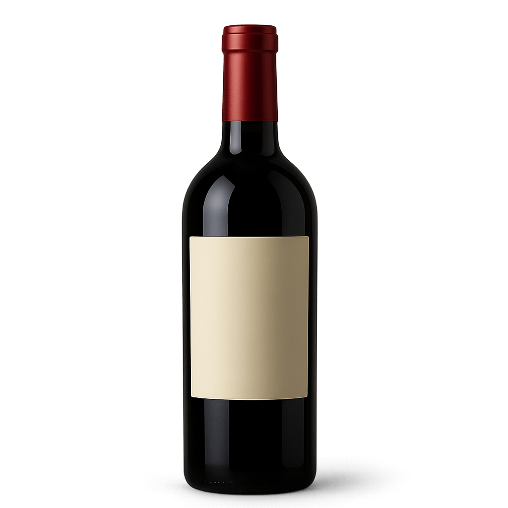

היינות המובחרים שלנו

קברנה סוביניון "שורשים"
יין אדום עם אופי, כזה שלא שוכחים. מומלץ לשתות ליד אח מבוערת, או לפחות ליד תנור ספירלה.
₪120
אני מעוניין
שרדונה "רוח קדים"
יין לבן קליל ומרענן שמרגיש כמו חופשה בבקבוק. אם תצמידו לאוזן, אולי תשמעו גלים.
₪95
אני מעונייןרוזה "שקיעה ורודה"
יין מושלם לדייטים, או סתם כשרוצים להרגיש רומנטיים עם נטפליקס. מתאים במיוחד לפיצה.
₪105
אני מעונייןסוד הקסם שלנו
שואלים אותנו הרבה מה הסוד שלנו. ובכן, הוא מורכב מכמה דברים: ענבים שגדלים באהבה, מסורת שעוברת מדור לדור, והכי חשוב - אנחנו משמיעים לכרמים מוזיקה קלאסית. הגפנים ממש אוהבות את מוצרט, אבל מתלוננות על בטהובן כי הוא "דרמטי מדי". התוצאה? יין רגוע, שמח והרמוני. בדיוק כמונו.
רגעים מהיקב


דברו איתנו
רוצים לקפוץ לטעימות? לשאול שאלה? או סתם להגיד שלום? השאירו פרטים ונחזור אליכם עם חיוך (ובדרך כלל גם עם יין).